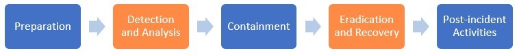
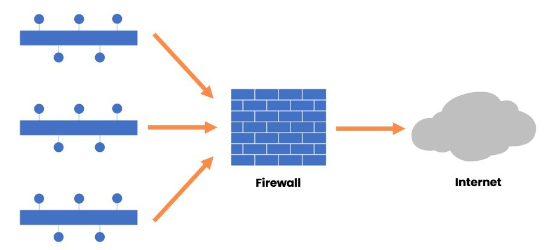
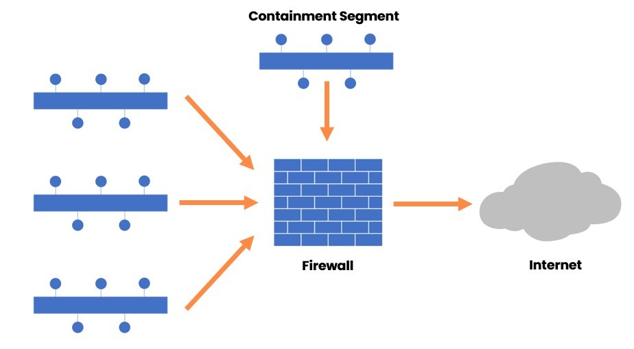
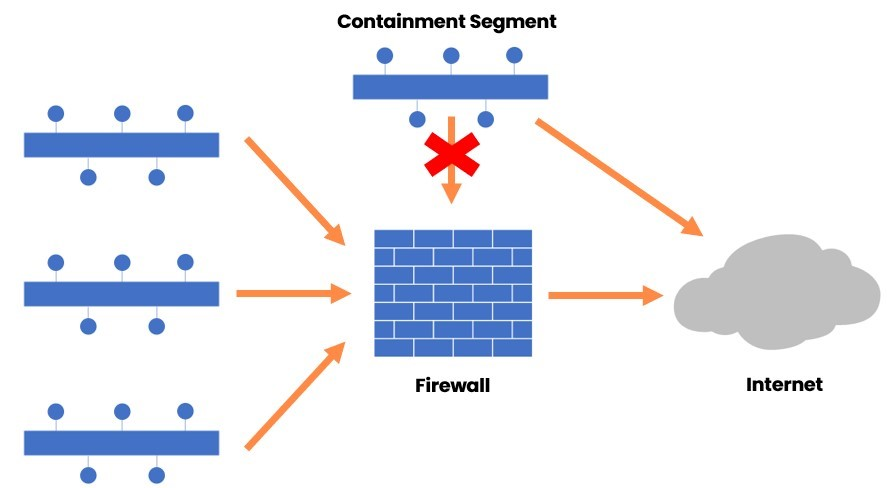
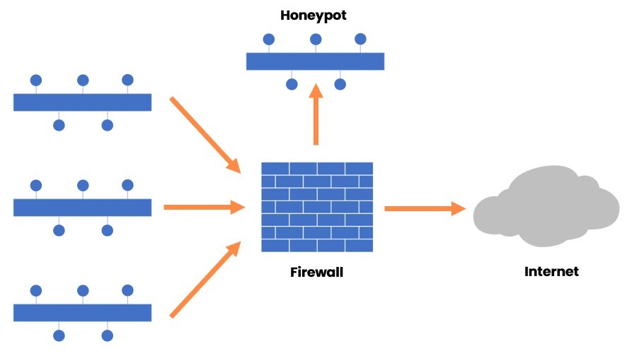

Introduction
9beca326-b493-4b0e-b3dc-d7dfb77df3c9
Welcome to the Initial Phases of Incident Response Practice Lab. In this module, you will be provided with the instructions and devices needed to develop your hands-on skills.
dc640c20-9434-45ea-b7c2-6d4d6a196bfc
Learning Outcomes
In this module, you will complete the following exercises:
- Exercise 1 - Preparation
- Exercise 2 - Detection and Analysis
- Exercise 3 - Containment
After completing this module, you will have further knowledge of:
- Training
- Testing
- Documentation of Procedures
- Characteristics Contributing to Severity Level Classification
- Downtime
- Recovery Time
- Data Integrity
- Economic
- System Process Criticality
- Reverse Engineering
- Data Correlation
- Segmentation
- Isolation
Exam Objectives
The following exam objectives are covered in this lab:
- 4.2 Given a scenario, apply the appropriate incident response procedure.
Note: Our main
focus is to cover the practical, hands-on aspects of the exam
objectives. We recommend referring to course material or a search engine
to research theoretical topics in more detail.
Lab Duration
It will take approximately 1 hour to complete this lab.
89816a20-56f2-42c5-bfa0-46f11f2986ba
Help and Support
For more information on using Practice Labs, please see our Help and Support page. You can also raise a technical support ticket from this page.
Click Next to view the Lab topology used in this module.
d2c53300-f951-45a9-9aa4-3d4ecae69e11
Lab Topology
This lab contains supporting materials for CySA+.

Click Next to proceed to the first exercise.
<
Home |
README >
CompTIA Cybersecurity Analyst (CySA+) Practice Labs
Exercise 1 - Preparation
Incident Response is a process in which an
organization manages to handle an attack, which could be of any nature,
such as an attack on a Web application or a data breach. The
organization must be able to manage the incident to limit the damage.
When an organization is well prepared to handle the incident, it can
save time, effort, and cost for the incident.
To be able to handle the incident, the organization
must have an Incident Response Plan, which defines the process to follow
when an incident occurs. There are broadly five different phases that
you have to follow through, Preparation, Detection and Analysis,
Containment, Eradication and Recovery, and Post-incident Activities:
Figure 1.1 Diagram of Incident Response Plan: Showing the phases of the Incident Response Plan.
While searching on the Internet, you will find several
variations in these phases. Every organization tailors the phases
according to their own need.
In this exercise, you will learn about the Preparation phase of Incident Response.
Learning Outcomes
After completing this module, you will have further knowledge of:
- Training
- Testing
- Documentation of Procedures
Your Devices
This exercise contains supporting materials for CySA+.

Training
After you have created the Incident Response Plan, you
need to train the Incident Response (IR) team members. Each member of
the team should be familiar with the plan. Each team member should be
aware of his or her responsibilities that they need to perform if an
incident occurs. It is important to note that there will be members of
the other departments, not just the IT team. Therefore, the training on
the Incident Response Plan should be in simple language rather than
technical.
In training, you need to ensure that you cover the following items during the training:
- Key terms related to Incident Response
- Key tasks performed in each phase
- Response methods based on the incident type
- Plan phases
- Roles and responsibilities
- Communication matrix
These are some of the key items that should be covered
in training. Different organizations may add one or more items in
training, but it is dependent on their training style and the coverage
they want to do in training.
Testing
After you have created the plan and trained the team,
you need to test the Incident Response Plan to ensure that it will work
as expected. As part of the testing, you should develop mock incident
scenarios and conduct testing around them. This will benefit the team
members to understand the Incident Response Plan. This reduces the
mistakes that they are going to make while handling an incident. Also,
testing assures that the Incident Response Plan that you have created
will be useful as and when an incident takes place.
Documentation of Procedures
As part of the Incident Response Plan, you need to
define several processes and procedures, which must be well documented.
You should document the following:
- Policies
- Procedures
- Governance methods
- Communication plans
- Agreements
dc2a295a-ab17-4b52-8e1c-80389d10a470
<
Home |
README >
CompTIA Cybersecurity Analyst (CySA+) Practice Labs
Exercise 2 - Detection and Analysis
Detection and Analysis is the second phase. There are
several activities that you will perform in this phase. You have to use
various tools and techniques to identify an incident. If you suspect an
incident is taking place because you have observed an unusual pattern in
the traffic or performance degradation in traffic on the Webserver, you
can use various tools, such as Wireshark, to capture the traffic for
analysis purposes.
In this exercise, you will learn about the Detection and Analysis phase.
Learning Outcomes
After completing this module, you will have further knowledge of:
- Characteristics Contributing to Severity Level Classification
- Downtime
- Recovery Time
- Data Integrity
- Economic
- System Process Criticality
- Reverse Engineering
- Data Correlation
Your Devices
This exercise contains supporting materials for CySA+.

Characteristics Contributing to Severity Level Classification
Different organizations have different severity level
classifications. For example, one organization may have five levels of
severity classifications, starting with Severity 1 to Severity 5. On the
other hand, some organizations may have three levels, Severity 1 to
Severity 3. In a nutshell, a severity level defines the amount of impact
it has on the business functions. If the incident brings down the
entire business function and puts it on a halt, it is considered as
Severity 1 incident.
In most cases, organizations tend to follow three levels, which are:
- Severity 1: It is an incident that has a high impact. For example, a Web server has been hacked, or a customer-facing application is down.
- Severity 2: It is an incident that has a
lower impact than Severity 1, but it is still a significant impact. For
example, a part of the Web application is not working, or the customers
are not able to search for data within the application.
- Severity 3: It is an incident that has a low
impact on business functions. For example, there is a performance issue
with a Web application or read and write operations take a longer time
than usual with a database.
Several factors help an organization to define the
severity levels. The biggest factor is the understanding of the
business. If your business is of regular of the mill business, you will
define your severity levels according to it. For example, if a server
goes down at 4 AM, you know that it is not going to cause chaos with the
customers, and therefore, you can fix it after 9 AM once the office
opens. However, on the other hand, if it is a customer-facing Web
application, you will tend to fix the issue right at 4 AM itself as it
is marked as a Severity 1 incident, and you need to assign a high
priority to this incident.
Other factors can involve your team size, type of business, and dependencies on the internal or external IT teams.
Downtime
The downtime that occurs due to an incident is
directly dependent on the severity of the incident. A Severity 1
incident doesn't always need to take a longer time to resolve. For
example, a firewall fails to function, which can be considered as an
incident. However, a redundant firewall activates and takes over the
primary firewall. Even though the incident is not fully resolved, there
is a workaround that has reduced the downtime.
Recovery Time
The recovery time from an incident depends on how
well the Incident Recovery team is prepared. If the team is well
prepared, then they will be able to respond better and quickly when an
incident occurs. This reduces recovery time. It also helps you minimize
the losses that may occur due to an incident. The recovery plan should
also focus on the recovery time of the incident. You should define the
strategies and methods that you can use when an incident occurs.
For recovering a system or an asset, you should understand the following key terms:
- MTD is the Maximum Tolerable Downtime for an asset on the network. The tolerable time may differ depending on the criticality defined for the asset.
- The RTO or Recovery Time Objective must
be smaller than MTD, which is Maximum Tolerable Downtime. RTO defines
the period within which the failed resource must be restored. Going
beyond the defined RTO might have unacceptable consequences.
- RPO, Recovery Point Objective, defines the tolerance level for an organization to which they can revert to an older version of data from a backup.
- Mean Time to Repair or MTTR is the time required to repair a nonfunctional system or application.
- WRT, Work Recovery Time, is the gap between the RTO and MTD. It is the time after RTO is over, and that is left to reach MTD.
- Mean Time Between Failures, MTBF, is the time that a device or service operates before it fails.
Data Integrity
The data integrity is the data that retains its
original and accurate form and has not been altered by unauthorized
users. Data integrity is about retaining the original form of the data
and its accuracy in its original form. The data will always be at risk
in one way or the other. For example, whether it is a small or large
breach that occurs on the network, it is the data and its integrity at
stake. The organizations must implement methods, such as event
detection, vulnerability management, and integrity monitoring, to
protect the data and its integrity.
When an incident occurs, the organizations need to
ensure that the data integrity is not tampered with. The Incident
Response (IR) team should restore the data during the recovery phase.
After the restoration of the data, its integrity must be verified.
Economic
Each incident within an organization has a financial
impact, which depends on the severity of the incident. The size of the
financial impact is the loss that the organization incurs due to the
incident. Smaller the incident, less is the financial or economic impact
on the organization.
System Process Criticality
There are systems, servers, and various other assets
in an organization. The assets that hold the critical data are typically
known as the critical systems, and they must be well protected. The
business processes will be hosting the data on the critical systems. You
need to define their criticality so that in case of a large incident
that impacts the entire or part of a network, you should know the
systems that need to be recovered first.
Reverse Engineering
In many cases, malware is the source of an incident.
The nature of the incident is dependent on the capabilities of the
malware, which cannot be determined unless you reverse engineer it. When
you reverse engineer the malware, you will be able to see the
functionality of the code. With the help of the malware analysis method,
you can understand the core functionalities and capabilities of the
malware. Therefore, malware analysis should also be part of the Incident
Response Plan. Within the team, there should be capabilities to know
the reverse engineering methods and processes to handle malware in an
incident.
Data Correlation
To improve the incident analysis, you will often need
to perform data correlation. Logs are the most important sources for
data correlation. You can track events through the logs. You should have
a Security Information and Event Management (SIEM) system on the
network, which gathers logs for analysis purposes from various servers
and devices. You should correlate the data in SIEM and analyze to
conclude that there is an incident that is either going on or has taken
place.
dc2a295a-ab17-4b52-8e1c-80389d10a470
<
Home |
README >
CompTIA Cybersecurity Analyst (CySA+) Practice Labs
Exercise 3 - Containment
In the Incident Response process, containment is a
critical activity. Depending on the nature of the incident, you will
have to select the appropriate containment strategy, which helps you
deal with the incident. The strategy that you select should be able to
limit the damage that is caused by the incident. As soon as an incident
is discovered, the compromised systems should either be isolated or
segmented, depending on the nature of the incident.
In this exercise, you will learn about the containment of an incident.
Learning Outcomes
After completing this module, you will have further knowledge of:
Your Devices
This exercise contains supporting materials for CySA+.

Segmentation
Segmentation can be done as a proactive or reactive
approach. In the proactive approach, the network is divided into
different segments. Each segment communicates to the other segments
through a firewall. For example, you have three key segments on the
network:
Figure 3.1 Diagram of Network Segmentation: Showing the network segmentation.
The segments can communicate with each other only
through the firewall, which contains strict rules. In this scenario, if
one of the segments is compromised, then the attacker will not be able
to get into the other segments without traversing through the firewall.
In the reactive mode, you build one or more segments
for containment. Assume that a few systems in one of the given segments
are compromised. To stop the attack from further spreading, a new
segment can be created, and the compromised systems can be moved to this
segment, known as a Containment Segment. After you move the
compromised systems to this segment, you contain the attack within this
segment if you implement strict firewall rules. The biggest benefit you
get is that you can perform a live analysis of the ongoing attack.
Figure 3.2 Diagram of Network Segmentation: Showing the network segmentation with a containment segment.
Isolation
Isolation works in a slightly different way than
segmentation. Even though segmentation limits the attacker's ability to
proceed further, you may have to use stronger measures to limit the
attack. One method that can be used as a stronger measure is isolation.
Two types of isolation can be applied:
- Isolating the affected systems
- Isolating the attacker
Isolating the Affected Systems
In this method, the segment that contains the
compromised systems is completely disconnected and isolated from the
rest of the network. The systems in the isolated segment can communicate
with each other, and therefore, the attacker is still able to access
all these systems. However, access to the other segments is missing
because this particular segment is now completely isolated. The
compromised systems can still have access to the Internet. In this mode,
the attacker can continue to access the compromised systems, but cannot
proceed beyond the other systems on the network as the segment is
isolated.
Figure 3.3 Diagram of Network Segmentation: Showing the network segmentation with an isolated segment.
Isolating the Attacker
In the isolating the attacker mode, a honeypot
environment is configured. It contains “real look-alike data” and
applications, which may attract the attacker. A honeypot is a decoy or a
trap created by organizations to attract hackers into a computer
system. One of the main objectives of using a honeypot is to monitor the
hacker exploit the vulnerabilities of the system, then subsequently
learn the weaknesses of the system, and apply the necessary security
measures to strengthen it from future attacks. While the attacker is
busy exploring the honeypot, its data, and applications, you can monitor
and review the attacker’s activities.
Figure 3.4 Diagram of Network Segmentation: Showing the network segmentation with a honeypot.
dc2a295a-ab17-4b52-8e1c-80389d10a470
86b3caf2-2504-4e20-a81b-2fcb2368c8d2
Keep all devices that you have powered on in their current state and proceed to the review section.
Review
Well done, you have completed the Initial Phases of Incident Response Practice Lab.
2abaca70-efa1-4fe5-94fb-ad1777bfc242
713df23c-6fdc-423f-8cc1-19588b3f293b
d4edff14-bb70-457d-b289-e7c4b5f1408d
53453421-f847-4322-ada9-65c6a90831ee
0659d381-7708-435c-9e38-37b8f04d71f8
1f9a1b4c-97f9-42a4-9cab-5da937ca2813
aaaaaaaa-1111-1111-1111-193f35a24fe3
Summary
You completed the following exercises:
- Exercise 1 - Preparation
- Exercise 2 - Detection and Analysis
- Exercise 3 - Containment
You should now have further knowledge of:
- Training
- Testing
- Documentation of Procedures
- Characteristics Contributing to Severity Level Classification
- Downtime
- Recovery Time
- Data Integrity
- Economic
- System Process Criticality
- Reverse Engineering
- Data Correlation
- Segmentation
- Isolation
Feedback
067744a4-4299-4662-b5be-04dbb636a007
Shutdown all virtual machines used in this lab. Alternatively, you can log out of the lab platform.